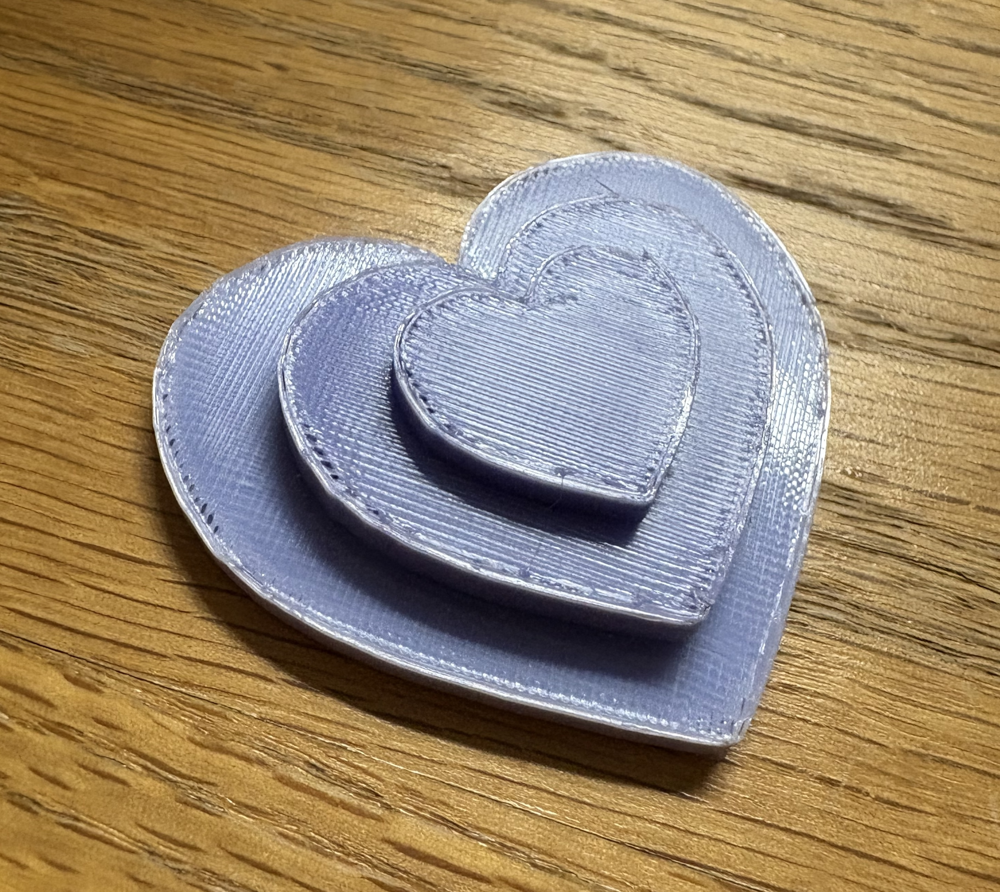
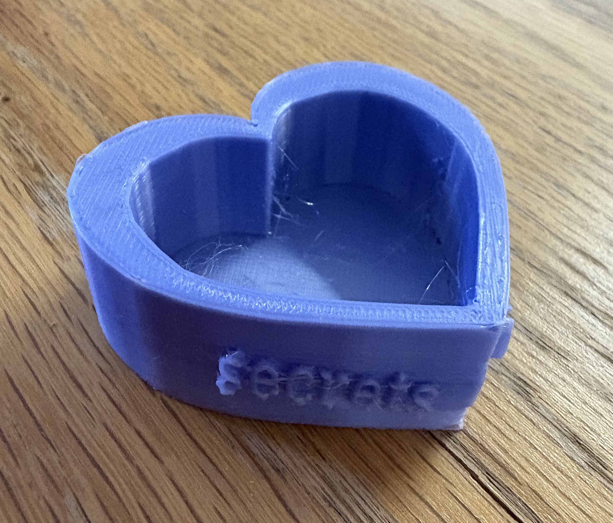
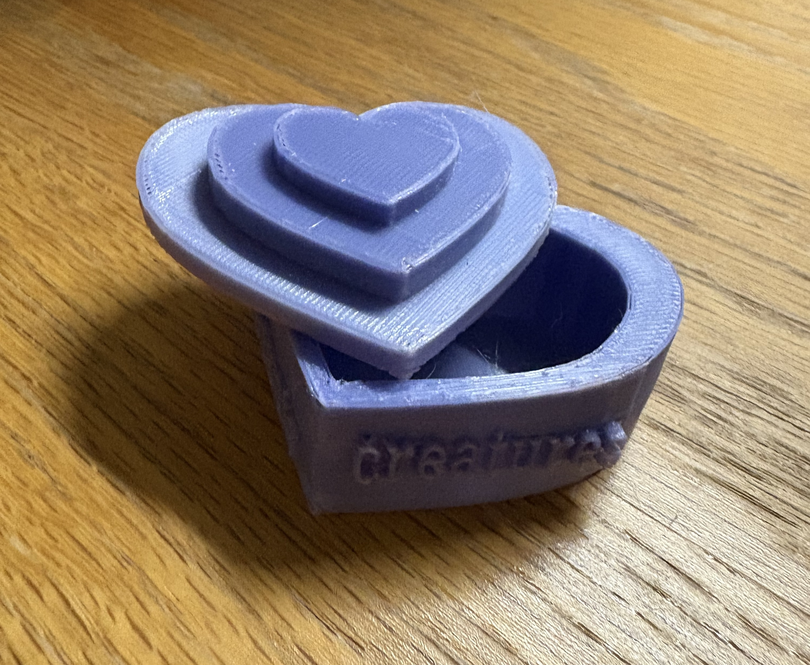
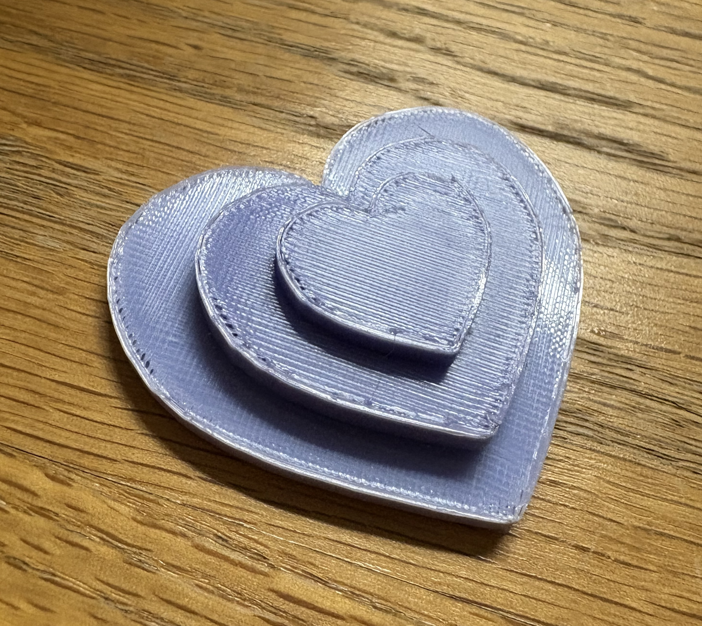
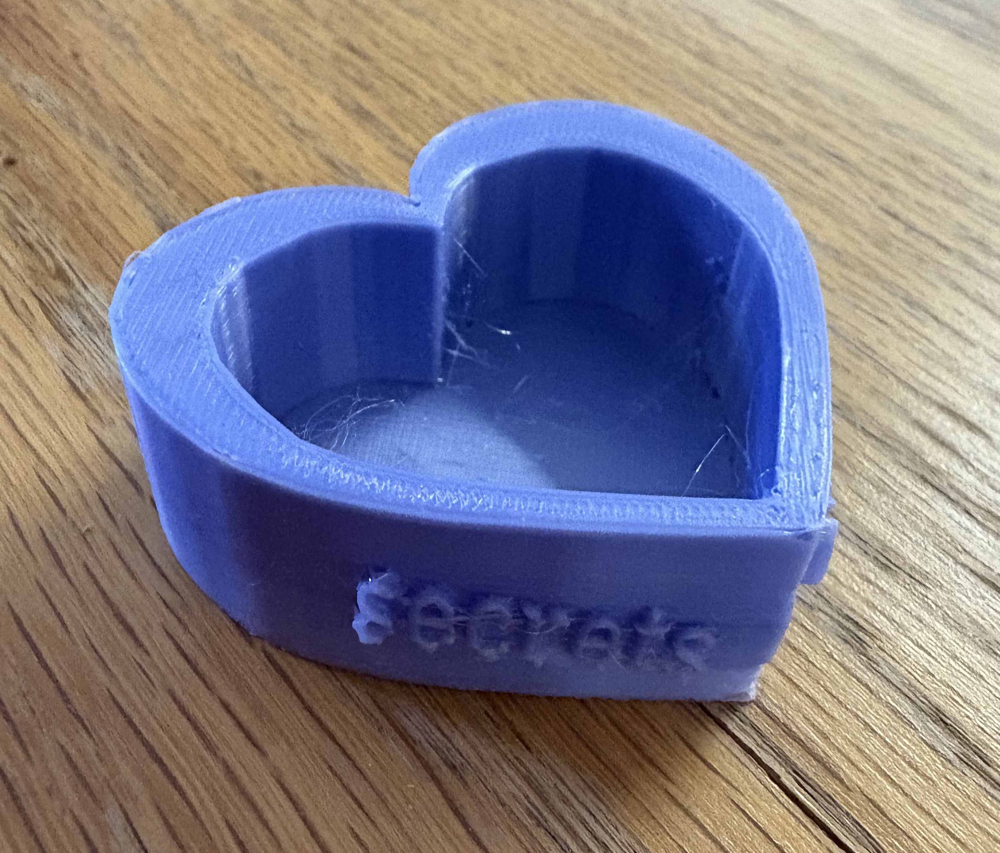
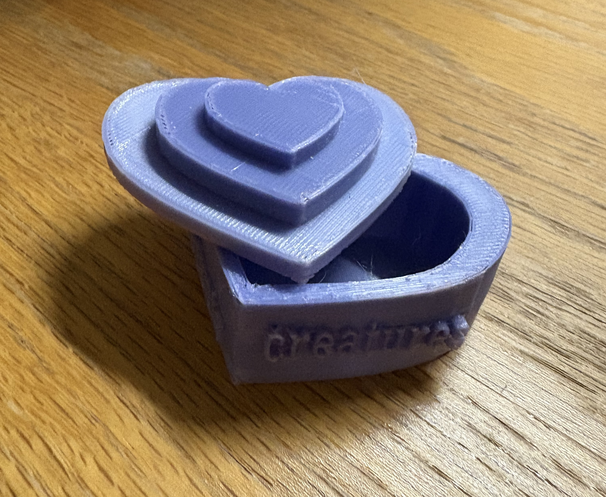

Project 1: Introduction to 3D Printing
Part 1: Nametag
I would consider this print successful, although there are noticeable flaws. It came out legible which is the most important element, but there were noticeable flaws. Mainly I had problems with some stringing that I had to clip off afterward. It’s not the cleanest result but it still serves its purpose. I think if I scaled it up a little then this problem would not be a concern. If I did this again I would also slow down the print speed for cleaner edges, and polish or paint the surface for a more clean appearance.

Part 2: Calibration (“torture”) print
I believe this print went very well, and I'm satisfied enough with the final outcome that it is by far my favorite. I really love the "furry" texture that came out around its ears! These "mini strings" add a great unintended detail. The details turned out really nicely, and the printer handled the overhangs impressively well. The bridges were a little rough, but overall, this was a successful calibration print. If I were to print it again, I might experiment with different settings to see if I could improve the bridge quality even further, but I'm quite pleased with how it turned out.


Part 3: Open-source assistive devices
This print had more challenges. It is supposed to be a light switch extender for people with limited mobility. Unfortunately, some of the supports collapsed inside during printing, leaving it unusable. In the pictures you can see how it will not be able to fit onto a light switch. If I were to print it again, I would increase its size and make supports easier to remove. Despite the failure, it’s a valuable prototype that shows how accessibility and design can work together.


Project 2: Creating & Remixing 3D Designs
CAD Orientation
I have completed the personal portfolio to the extent that it meets all of the requirements, but I still feel like I can add more, and this is not the ultimate representation of how much I have learned in both of these CAD software programs. I feel like I am now very familiar with how to use Tinkercad, and it is very easy to use; however, I also think I have reached the limits of its power. It falls short if I am envisioning something specific in my head to create because I don’t have much control over the details. I still think it is useful if I do not have a certain end goal in place because just playing around with the applications available offers enough creativity that I can create something new. For example, I wanted to curve the edges of the little heart box I made, but no feature in Tinkercad allows the user to do that. After I finished the heart box, I downloaded Fusion, and already I was facing a torrential downpour of problems, with only the download process, because apparently I had downloaded it before and it said I signed in too many times already, and it would not recognize the educational account, and though I had access I am still getting a countdown in Fusion about how many days I have left before it expires. Hopefully, I can figure this out before it expires, and if I lose access to Fusion again. We will see soon…
 





Design Research and Planning
This is the 3D model I chose to remix:


This is my concept sketch for modifying it:

Tinkercad Remix
This print completed successfully but required extra post-processing. Although it printed cleanly, the tradeoff was an excess of generated supports, and removing them took around 30 minutes. I also had to sand down the sides to make the twisting mechanism work smoothly, which ultimately resulted in a functional model.


Fusion Remix
I encountered multiple failed prints at first. The eventual successful one was a 4-hour print completed in the MakerLab; the issues seemed related to bed adhesion since earlier attempts failed early in the print. When I altered a gap between components, it must have improved stability. I also had to remove supports, but these were much easier to detach, and there was no sanding involved.


Project 3: Form and Fit for Electronics
Assembly
My most feared challenge with this project is accidentally soldering the wrong component in place, since that mistake could be difficult to fix. I am also worried about potentially losing one of the small pieces, which would make the process take much longer because I would spend a while searching for it; all of the time I waste could be frustrating. One strength of the instruction manual I got is that it is clear and detailed, which helps me feel more confident as I begin. However, a weakness is that the guide could include more pictures—visuals would make it easier to double-check each step and reduce the chance of mistakes. I actually just looked for the instructions online, just because I am prone to losing papers, and I found a manual that included pictures! This looks super helpful, especially for figuring out which parts they are referring to.

For dividing work, we just took turns when each of us wanted a break from soldering and wanted to read the instructions instead. There wasn’t much work, so we did not have a strategy or plan of any kind. When we were getting started, I asked Avery for some help with soldering, and she did the first step as an example. Avery then suggested snipping the extra tail off. Unfortunately, it was soldered in the wrong position and we had to undo it, but we couldn't reuse the resistor because its wires were too short. Luckily, there were extra resistors, so this was not a horrible problem. Issues similar to this happened throughout the rest of the build, but we were able to resolve all of them by either finding a replacement part or just fiddling around with things until it worked. One tricky step was attaching the antenna; it was larger and heavier, so we were struggling with getting enough solder to hold it in place so it wouldn’t fall off. I wondered whether we were actually supposed to screw it in place, but there was no screw in the kit that matched up to the hole, and it seemed like solder was really the only option. Another tricky component to attach was the chip. I did not know how much to tin the pads, and then once I tried to attach the chip, it was so tiny that it just kept flying around when I tried to move it. After a while, I asked my partner to try it out; although I had little faith that it was even possible at this point, he was able to attach it in place without much trouble, and it ended up working!
Measurements: *Rough, because I want to add extra space for tolerances anyway. Speaker: 2.8in x 1.6in Main PCB Board: 1.7in x 2.45in Battery: 3in x .83in Widest Part of all Components: Their example enclosure: 4.17in x 3in
Design and 3D Print an Enclosure
Design and Laser Cut an Enclosure
Project 4: Design for Repair
Documentation
The idea I had was to create a prosthesis that is tailored for a specific skill; I chose to design something that would facilitate someone’s ability to play the guitar. To achieve this, I printed a prosthetic finger with a guitar pick attached to it. When I was first brainstorming ideas, I also thought of making a prosthetic with a crocheting tension ring attached to it for someone who needs a prosthetic but also wants a tool for tension while crocheting. Wearing the ring on your prosthetic finger is your only other option, but this might cause tensioning issues because the ring is not secured to the prosthetic as much as it would be if it were on a real finger. I did not pursue this idea because crocheting techniques are highly custom and may not be suitable for every user; they would probably want to customize it. This is why I wanted to do something more general. My other idea was a drumstick for someone with a prosthetic arm. However, design-wise, this would only be a stick and not much of a design. I was also considering prosthetic devices for other musical instruments, for the violin or piano. The technical aspects of these other ideas seemed much more complex and would take quite a bit more time to create and develop. Once I had settled on my idea, I looked at a lot of different prosthetic models that were free online. I initially was visualizing printing an entire hand, but I realized that I would just be following other people’s tutorials instead of creating something new with my input. I decided that for my goal, I would scale the problem down to be a prosthetic finger for someone with an amputated thumb. While browsing through the 3d files available online, the most common types of prosthetics were the ones with artificial tendons (using strings) that would mimic natural movement. Although this makes sense for a daily prosthetic that can do routine tasks, like picking things up, this feature actually hinders my specific goal of a prosthetic that can help you play the guitar, because the tendons make it harder to have a consistent ‘grip’ on the guitar pick when strumming the strings. I think that a higher-quality prosthetic would not have this problem, and I am sure those exist somewhere, but in terms of a 3D-printed one, the benefit from having the user actuating the finger’s tendons by moving their wrist or arm is not precise enough to be something worth pursuing in this case. I think that the most helpful concrete thing that has come out of this project was just putting this idea out there so that it could inspire someone else to come up with a better idea. Especially because prosthetics need to be so personalized to each individual, I know that nobody could actually use this model, but perhaps someone could print it and try using it to see what they would need to change if they wanted to make it actually work. How to manufacture it: Because I decided to make a solid prosthetic, I did not need to contemplate how each part would fit into another piece. I effectively just merged a file of a finger shape and a guitar pick, and positioned them in a way that would make sense in terms of playing a guitar. Reflection on your process: I do wish I could have explored something more complex. It nearly feels like I did nothing, but sometimes simple is actually the best design. Self-critique: I am pleased with how the final product turned out, and I am happy with how much I was able to learn about prosthetics. I really enjoyed getting a comprehensive understanding of what the landscape of prosthetic fingers looks like. I think that if I could do it again, I would have chosen to try a model that uses an artificial tendon because if my prints did not fail the first time (I actually tried to print them again, and they printed completely, but I had run out of time by that point), then I might have been able to actually get a model with a working tendon and guitar pick. Instead, after the more complicated prints failed, I chose to pivot and try my luck with just a solid finger. This time, this print did not have any trouble, but some people might look at this kind of prosthesis as primitive. I also can’t really demonstrate how well it works because I do not have an amputated thumb so when I try and put it on, it looks disproportionately long. A critique of existing documentation: The existing documentation for prosthetics is available; however, I felt a level of choice paralysis when learning about it because there are so many customizations and variations for specific needs that I did not know which type of prosthetic to choose. Also, while the existing documentation is good, there is still a lot of room to make it more detailed to account for different sizing and show more pictures of different customization options (ex. usually they say that their model of a finger can work for other fingers too, but they do not show final versions where that is the case and what exactly you need to change to make that happen).
Project 5: Evidence of Design Scavenger Hunt
Designs for access
1. Evidence of design for navigation without one or more of the 5 senses
2. Evidence of design for forms of assistance, broadly defined
3. Evidence of design for aging, broadly defined
4. Evidence of design for young children (no parks or playgrounds)
5. Evidence of design for wheeled mobile gear (chairs, bikes, strollers, etc.)
Designs against access
6. Evidence of design with physical barriers
7. Evidence of design with a lack of information
8. Evidence of design with an absence of help
Design priorities in the built environment
9. Evidence of design for historical specificity
10. Evidence of design for environmental sustainability
11. Evidence of design for health and well-being
12. Evidence of design for ........ (fill in the blank and provide an example of a design priority
that is not listed)